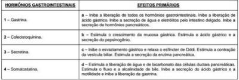

Mulher, 46a, procura Unidade Básica de Saúde com queixa de dor abdominal frequente, infraumbilical, que ocorre 2-3 vezes/dia, há mais de um ano. Algumas vezes pós-prandiais, melhora com evacuação. As fezes são amolecidas, com presença de muco e sem outras alterações. Refere urgência para defecar, com episódios à noite. Nega emagrecimento e febre. Exame físico: dor à palpação de fossa ilíaca, ausência de massas palpáveis. A HIPÓTESE DIAGNÓSTICA É:
A síndrome do intestino irritável (SII) é um distúrbio funcional caracterizado por dor ou desconforto abdominal e alterações do hábito intestinal na ausência de anormalidades estruturais identi cáveis. No mundo, cerca de 10-20% dos adultos e adolescentes relatam sintomas condizentes com SII, com predominância feminina demonstrada na maioria dos estudos. Entre os critérios clínicos para o diagnóstico da síndrome do intestino irritável assinale a alternativa correta. I - Dor abdominal redicivante é uma manifestação clínica necessária. II - O hábito intestinal alterado é a manifestação clínica mais consistente. III - Os pacientes frequentemente se queixam de distensão abdominal, eructações e flatulência.
Assinale a alternativa correta sobre a anatomia cirurgica do cólon e do reto.
Faz parte da classificação de Roma IV. para o fechamento do diagnóstico da síndrome do intestino irritável:
A Síndrome do intestino irritável é um distúrbio intestinal funcional que pode acometer indivíduos de todas as idades, apesar de a maioria dos pacientes ter seus primeiros sintomas antes dos 45 anos. Trata-se de uma doença cuja etiologia é provavelmente multifatorial. Geralmente os pacientes têm indícios de hipersensibilidade visceral e distúrbios da motilidade intestinal. Com relação aos fatores etiológicos da SII e sua fisiopatologia, analise as afirmações abaixo e depois responda. I. Ansiedade e/ou depressão e seus sintomas frequentemente são agravados por estresse sugerindo uma interação anormal entre encéfalo-intestino (disfunção autonômica). II. Estudos genéticos sugerem que alguns pacientes com SII possam ter anomalias genéticas envolvendo o sistema de transporte de serotonina nos nervos entéricos. III. Até 30% dos pacientes com SII poderão ter má absorção de ácidos biliares. IV. Disbiose e anormalidades da permeabilidade da mucosa intestinal também foram descritas em pacientes com SII o que poderá causar inflamação da mucosa intestinal.
A arcada de Riolan faz parte da vascularização do intestino grosso e é composta pela ligação entre dois vasos. São eles:
Uma paciente feminina, 29 anos, diagnóstico depressão há 4 anos em tratamento com uoxetina 20mg/dia, vem à consulta na unidade local de saúde com queixas de fadiga e hábito intestinal “irregular” nos últimos 3 meses. Períodos de evacuações em média a cada 3-4 dias, com fezes ressecadas, alternadas com períodos de evacuações pastosas, além de desconforto abdominal. Sem outros sintomas/sinais na história e exame físico. Assinale a alternativa com a conduta inicial mais indicada para o quadro clínico descrito.
Um dos efeitos primários da colecistoquinina é:
A síndrome do intestino irritável (SII) é de grande relevância clínica e com repercussão importante para os portadores. Seus sintomas estão associados à piora na qualidade de vida e em grande absenteísmo ao trabalho. É achado frequente na SII
A função linfoide do intestino delgado está localizada:
A artéria mesentérica inferior, é ramo direto de que artéria:
Avalie as asserções a seguir e a relação causal proposta entre elas: I – Depois da ingestão de uma refeição, a contratilidade colônica tônica e fásica aumentam por um período de aproximadamente 2 horas; PORQUE; II – a distensão mecânica do estômago aumenta a motilidade colônica, mediada pelo nervo vago.
Uma Paciente procura o ambulatório com queixas de diarreia crônica. Qual dos sintomas abaixo fala contra o diagnóstico de diarreia funcionar (Síndrome do Intestino Irritável)?
Mulher, 43a, procura atendimento médico queixando-se de dor em abdome inferior de moderada intensidade, 2- 3x/semana, acompanhada por distensão abdominal recorrente há 1 ano e diarreia 3-4 episódios/dia sem muco ou sangue. A dor e a distensão são piores imediatamente antes e aliviadas pela evacuação. O quadro é agravado pelo estresse e pela ingestão de alimentos condimentados, frituras e bebida alcoólica. Exame físico: IMC = 26kg/m², toque retal: sem alterações. A CONDUTA PARA INVESTIGAÇÃO DIAGNÓSTICA É:
Na avaliação de uma paciente com diarreia crônica, qual dos sintomas torna menos provável o diagnóstico de síndrome do intestino irritável?
Após exaustiva anamnese, chega-se à conclusão do diagnóstico de síndrome do intestino irritável em uma mulher de 25 anos. Qual outra condição clínica espera-se encontrar nessa paciente?
Quanto à anatomia dos cólons e do reto, considera-se que
Em relação ao suprimento arterial dos cólons, o ponto de Griffith está localizado no(a):
Paciente de 38 anos vai à consulta devido à dor abdominal recorrente que se iniciou há alguns anos. Refere que tem diarreia intermitente, sem muco, pus ou sangue, que a dor melhora após a evacuação, e que emagreceu moderadamente (5% do peso inicial) durante o último ano. Eventualmente tem aftas que duram uma semana. O médico considera o diagnóstico de síndrome do cólon irritável. O critério relevante para o diagnóstico fornecido na história é:
Com relação à anatomia vascular dos cólons e reto, assinale a alternativa INCORRETA.
Mulher de 30 anos procura atendimento ambulatorial em sua unidade básica de saúde de referência. Durante a consulta com seu médico de família e comunidade, queixa-se de dores abdominais em cólica e períodos de diarreia, alternando-se com obstipação intestinal há cerca de 2 anos. Os sintomas são intermitentes com períodos variáveis de remissão. O exame físico não mostrou anormalidades. Trouxe uma colonoscopia normal. O diagnóstico mais provável neste caso é:
São mecanismos fisiopatológicos da Síndrome do Intestino Irritável, EXCETO:
O conhecimento da anatomia pélvica explica a razão pela qual, a administração de fármacos por via retal (enemas supositórios) e não por via oral, tem em princípio a vantagem de:
Associe os Hormônios Gastrointestinais a seus respectivos Efeitos Primários e, em seguida, marque a opção contendo a sequência CORRETA. (Conforme imagem do caderno de questões).

Paciente de 26 anos de idade, portadora de hipotireoidismo, há 2 anos com história de crises de desconforto abdominal, distensão e atulência, é recebida no ambulatório de Clínica Médica. Refere sensação de “barriga inchada” que a incomoda bastante. Seu hábito intestinal é variável conforme a alimentação. Procurou a UBS, recebendo tratamento com simeticona e escopolamina com pouco alívio. Está preocupada e ansiosa pois sua avó faleceu neste ano de câncer colorretal e seus sintomas eram semelhantes. Aguarda marcação de consulta com gastrenterologista. Está em uso de polivitamínico e anticoncepcional oral. Assinale a alternativa CORRETA, que apresenta a orientação inicial mais adequada ao atender esta paciente.
Além de possível associação com bromialgia, as manifestações clínicas de pirose, náuseas, dor abdominal em cólica com sensação de distensão e diarreia, geralmente diurna em pequenos volumes, com fezes amolecidas, podendo piorar após alimentação ou estresse e aliviar após evacuação, caracterizam um quadro de:
Joana, 35 anos tem cólica abdominal crônica, diarreia e constipação intermitentes, sem perda de peso e sem sangramento gastrintestinal. A dor geralmente melhora com a evacuação. A colonoscopia e a endoscopia alta têm biópsias normais e as coproculturas são negativas. Assinale a alternativa CORRETA, quanto ao diagnóstico cabível para o paciente.
Um paciente com 35 anos de idade, controlador de voo, retorna à consulta na unidade básica de saúde apresentando resultados negativos de exame protoparasitológico de fezes e de teste de tolerância à lactose. Relata que desde a adolescência tem episódios de evacuações explosivas com fezes amolecidas. Atualmente, queixa-se de alteração de hábito intestinal há seis meses, quando passou a apresentar desconforto abdominal em andar inferior do abdome, que dura em média dois a três dias por semana, alternando quadros de obstipação com diarreia e urgência fecal, com a presença de muco de cor clara, quase transparente. O quadro de desconforto abdominal piora em situação de estresse e melhora quando evacua ou elimina atos. Em relação ao quadro clínico apresentado, qual das alternativas abaixo representa critério para o diagnóstico?
Um paciente é acompanhado no ambulatório de clínica médica há um ano com diagnóstico de cólon irritável. Agora, um residente novo no serviço passa a ser responsável pelo acompanhamento deste paciente. Uma característica que, se relatada, o levaria a questionar o diagnóstico seria:
Paciente de 30 anos, sexo feminino, queixa-se de dor abdominal em cólica em períodos de diarreia alternados com constipação ha três anos. Os sintomas são intermitentes com períodos variáveis de remissão. O hemograma, as proteínas totais e frações e o VHS não apresentam anormalidades. Qual é o diagnóstico mais provável ?
Paciente de 61 anos, sexo feminino, comparece à Unidade Básica de Saúde com queixa de diarreia recorrente iniciada há 2 anos. Refere 3 a 4 evacuações ao dia, sem sangue, pós-prandial, alternando com períodos de evacuações normais. Nega perda de peso. Refere cólicas abdominais difusas que aliviam com a evacuação. A diarreia não se associa com a ingestão de leite ou derivados. Refere antecedente de constipação crônica na infância. Aposentou-se recentemente. Exame físico normal. O médico de família solicitou exames que revelaram hematócrito 42%, hemoglobina 14 g/dl, VHS 15 mm/h, PCR 0,05 mg/dl, TSH 2,3 µU/ml, albumina 4,0 g/dl, hemoglobina glicada 5%, parasitológico de fezes negativo para protozoários e helmintos, pesquisa de leucócitos nas fezes negativa. Ileocolonoscopia normal. US de abdome normal. Qual o melhor diagnóstico?
Mulher de 32 anos queixa-se de dor no quadrante inferior esquerdo do abdome, uma vez por semana, há 4 meses, associada a fezes liquefeitas, sem sangue. Melhora com a evacuação e piora no período menstrual. Usou amoxicilina há duas semanas para faringite. Está desempregada há 8 meses. Exames: Hematócrito 37%, hemoglobina 12 g/dl, VHS 5 mm, leucócitos 7.000/mm³, hormônios tireoidianos normais, glicemia de jejum 86 mg/dl. Retossigmoidoscopia sem lesões. Dentre as alternativas abaixo, qual o mecanismo siopatológico que melhor e mais frequentemente explica esta condição clínica?
Mulher de 37 anos procurou emergência médica por dor intensa, em cólica, no quadrante inferior esquerdo do abdome há dois dias. As fezes eram uidas e com muco, 2 a 4 vezes ao dia. Esses sintomas eram recorrentes, 2 a 3 vezes ao mês, há 18 meses, piorando no período menstrual e por ocasião da ingestão de certos alimentos, como queijo, massas ou frituras. Usa enalapril e uoxetina. Exames: hematócrito 37%, hemoglobina 12 g/dl, VHS 10 mm, retossigmoidoscopia: normal. Histologia do sigmoide: infiltrado linfomononuclear leve. Qual o diagnóstico mais provável?
Em um paciente com Síndrome do Intestino Irritável na forma diarreica, qual seria a melhor opção terapêutica, por conjunto de drogas?
Quanto à síndrome do intestino irritável (SII), assinale a opção incorreta.
Leia o texto abaixo e o complemente com a resposta correta. O suprimento sanguíneo para o duodeno provém_______________________.O jejuno e o íleo são irrigados __________________________.Asartérias jejunais formam várias arcadas longas que emitem artérias terminais bastante longas (artérias retas); as artérias ileais formam numerosas arcadas pequenas com artérias terminais pequenas.
Leia o texto abaixo e o complemente com a resposta correta. Embora a transição entre o jejuno e o íleo ___________,mudanças graduais podem ser vistas nas características do intestino, na vascularização, ___________eaté mesmo na localização geral. O diâmetro do jejuno é maior porque o volume do quimo não se reduziu pela absorção de líquidos. A parede jejunal também é mais espessa por serem as pregas circulares mais altas e mais numerosas. Agregados de tecido linfoide ___________no íleo.
Região intestinal onde ocorre a absorção de ferro, cálcio e magnésio: Respostas: 1 12 23 34